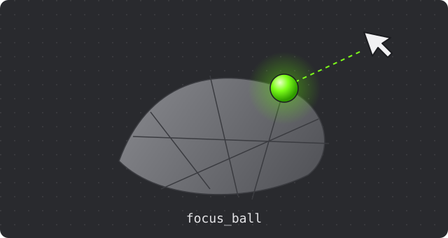

v1.0 · Houdini 22Focus Ball
Haz clic en el viewport y una esfera verde fosforito se pega al punto más cercano al ratón. Sigue al punto aunque el objeto se mueva o la geometría se deforme.
Huella SHA-256 del script en SHA256SUMS.
Instalación
- En un shelf, clic derecho → New Tool… y ponle de nombre Focus Ball.
- En la pestaña Script, con el lenguaje en Python, pega el script y pulsa Accept.
Uso
- Pulsa Focus Ball en el shelf.
- Haz clic sobre la geometría: aparece un objeto
focus_ballcon la esfera pegada al punto. - Sigue haciendo clic para añadir más bolas. Esc para salir.
La bola lee la geometría en vivo (Object Merge + Blast del punto), así que sigue animaciones y deformaciones. Funciona a nivel OBJ y dentro de un geo. Cada bola es un solo paso de Undo.
Va ligada al número de punto: si la topología cambia, puede saltar. Si la geometría tiene atributo id, lo usa y aguanta esos cambios.